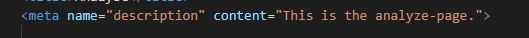

Analyse
Dette er en analyse av nettstedet, den tar for seg de viktigste problemene som oppsto under Lighthouse analyse, en Webaim evaluering som tar for seg SEO og UU, en tabell med endringene jeg gjorde på nettsidene, en heuristisk evaluering og en tilgjengelighetserklæring.
Lighthouse
Slik ser resultatene fra hjemmesidens første analyse på mobil. Det største problemet jeg møtte var at bildene var i en veldig dårlig format (jpg), hvor jeg endret de til WebP som er mye bedre egnet for nettsider. Dette problemet løste performance på alle sidene, både på mobil og desktop. Deretter møtte jeg på et Accessibility problem som var at en iframe tag ikke hadde «title». I tillegg lå det problem i at headingene ikke var sequentially-descending, altså h1 til h2 osv.
Andre feil var at printerest share knappen hadde for dårlig kontrast til bakgrunnen, fikset dette ved å endre color til svart. I SEO fikk jeg opp «Document does not have a meat a description» som enkelt kunne fikses ved å skrive:
Etter å ha fikset opp de fleste feilene, får jeg nesten 100% på alle metrics-ene også på de andre sidene.
WebAIM Evaluering

Webaim sier oss mye om SEO og UU-en til nettsiden min. 0 kontrast feil tyder på god UU med tanke på at alt er lesbart. Mange struktur elementer som er i korrekt semantisk rekkefølge gir god SEO og viser også at siden er fint strukturert.
På bildet ser man at kontrasten mellom bakgrunn og teksten til de minst lesbare linkene fortsatt passer alle krav.
Alt tekst for bilder samt meta språk tag hjelper til med SEO
Heuristisk Evaluering
Heuristisk evaluering tar utgangspunkt fra 10 ulike prinsipper. Disse er tommelfinger-regler og ikke spesifikke retningslinjer. F.eks. basert på prinsipp 1, som handler om å informere brukeren hvor den er, har jeg titler over alle innholdsidene som informerer. Ifølge prinnsipp 3, trenger brukerer en enkel og klar måte å komme seg ut av steder de med uhell gikk inn. Logoen til nettsiden min har den funksjonen, at det er en liten reddningsknapp
Konsistens og standarder er viktig for at brukeren skal vite at de ikke har sporet av, derfor er nettsiden min nesten prikk lik på alle sidene. Snarveier for de erfarende brukerene gjør at siden min blir mer fleksibel og tar for seg prinsipp 7. Disse snarveiene kan være den litt skjulte "kontakt oss" knappen. Prinsipp 8 sier at grensesnitt burde ikke ha irelevant inhold eller innhold som blir lite brukt. Derfor er siden min minimalistist og har kun de viktigste elementene.